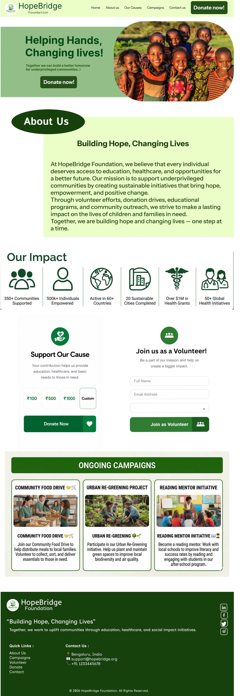
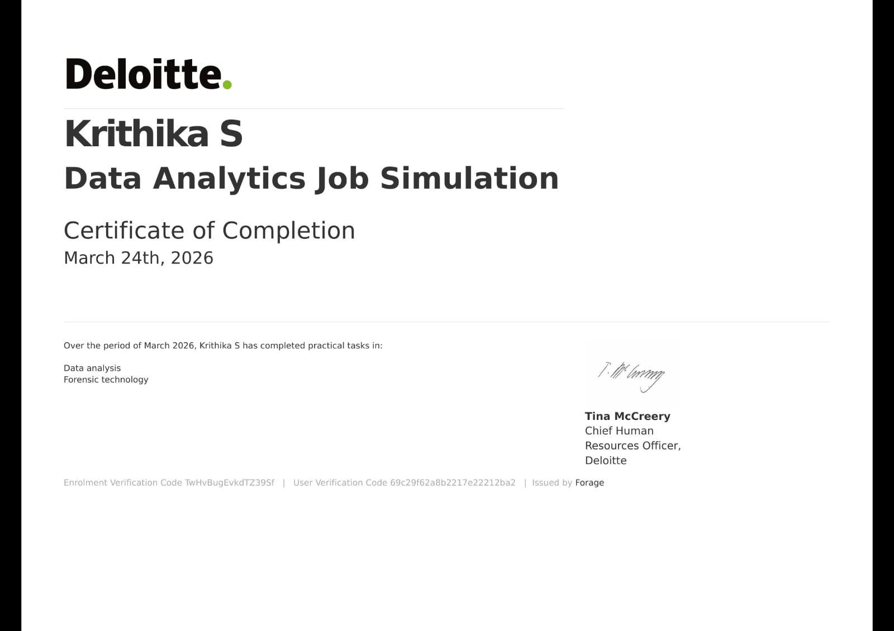
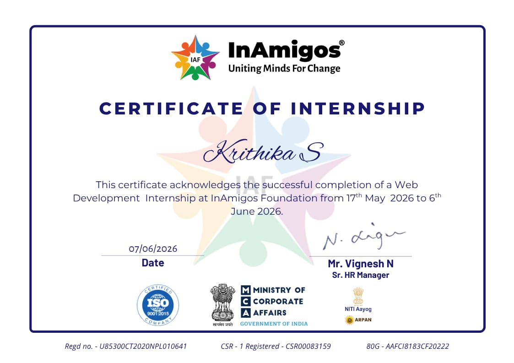
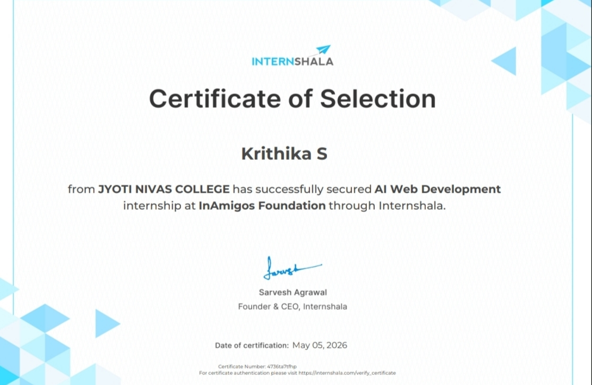
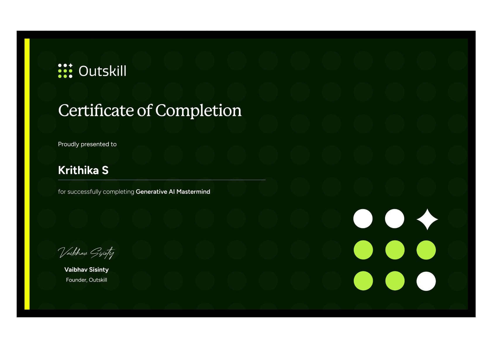
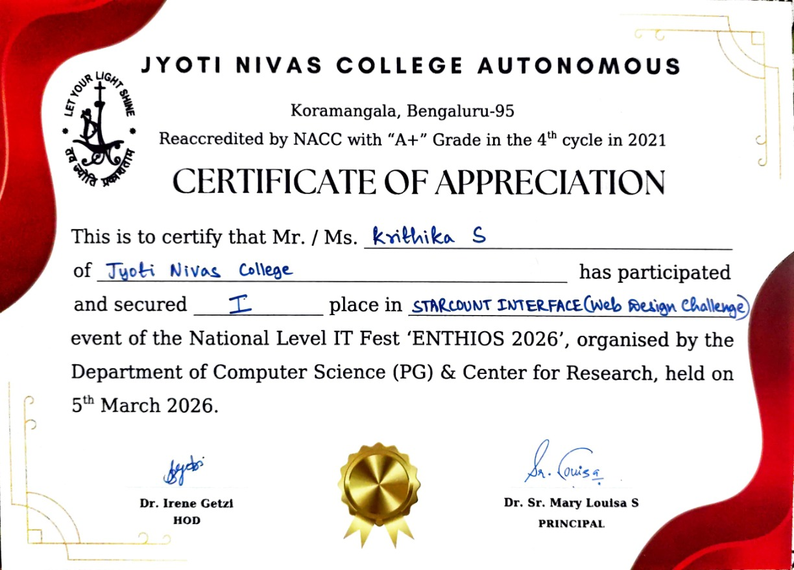

Aspiring Data Analyst & Tech Enthusiast
AI · Analytics · Web · Automation · Prompt Engineering
I'm Krithika S — a second-year BCA Data Science student at Jyoti Nivas College Autonomous, Bangalore, with an unrelenting curiosity for where data meets intelligence.
My work lives at the intersection of analytics and emerging technology. I'm drawn to systems that learn, tools that automate, and interfaces that communicate — which is why I spend as much time studying AI-assisted workflows and prompt engineering as I do sharpening my data and development skills.
From building interactive data dashboards to directing AI agents that handle real-world automation, I approach every project with a builder's instinct and an analyst's eye. I don't just consume technology — I use it to create, question, and solve.
I'm actively growing toward a career in data analytics while staying deeply engaged with the AI landscape — exploring how intelligent tools, thoughtful design, and clean data storytelling come together to create something genuinely useful.
A curated toolkit built through hands-on projects and continuous learning.
Five projects spanning data analytics, AI automation, interactive dashboards, and UI/UX design.
A 5-page interactive strategy dashboard that I designed and directed using AI-assisted development. Analyzed 1,465 Amazon products across 8 categories to surface real business intelligence around competition, pricing strategies, discount patterns, customer sentiment, and market opportunities.
A data analysis project built from real-world datasets. Defined key objectives including trend identification, regional comparisons, and growth pattern analysis. Used structured AI prompts to build HTML/CSS/JS dashboards with case trend charts, recovery rate visuals, and comparative analytics.
An interactive electoral analytics dashboard analyzing Tamil Nadu Election 2026 data. Features party performance breakdowns, vote share trend analysis, and comparative visualizations — all developed using AI-assisted workflows with Claude and structured prompt engineering.
A conversational AI agent built with n8n that handles appointment booking through natural language interactions. Integrates OpenAI for intelligent scheduling conversations, Google Calendar for real-time availability, and a memory system for context-aware follow-ups.
A full NGO website concept created during my AI Web Development Internship at InAmigos Foundation. The design encompasses donation UX, volunteer registration flows, impact showcase layouts, and campaign sections — all structured around social-impact communication principles.

Verified programs and courses completed across data analytics, AI, and professional development.




* Place your certificate image files in the assets/ folder to display them. See deployment instructions.

Specializing in data science with coursework covering data analytics, machine learning foundations, database management, statistics, and modern programming paradigms. Reaccredited by NAAC with "A+" Grade (4th cycle, 2021).